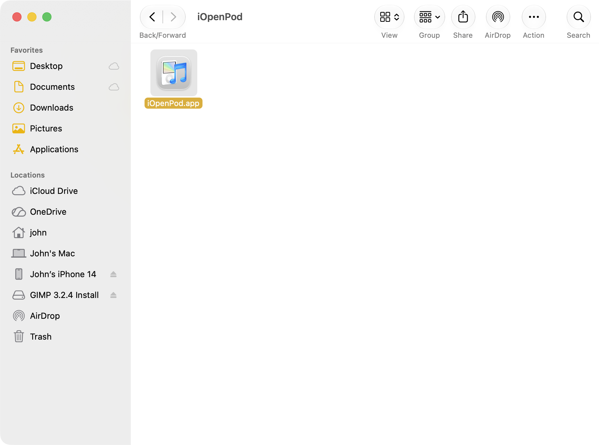
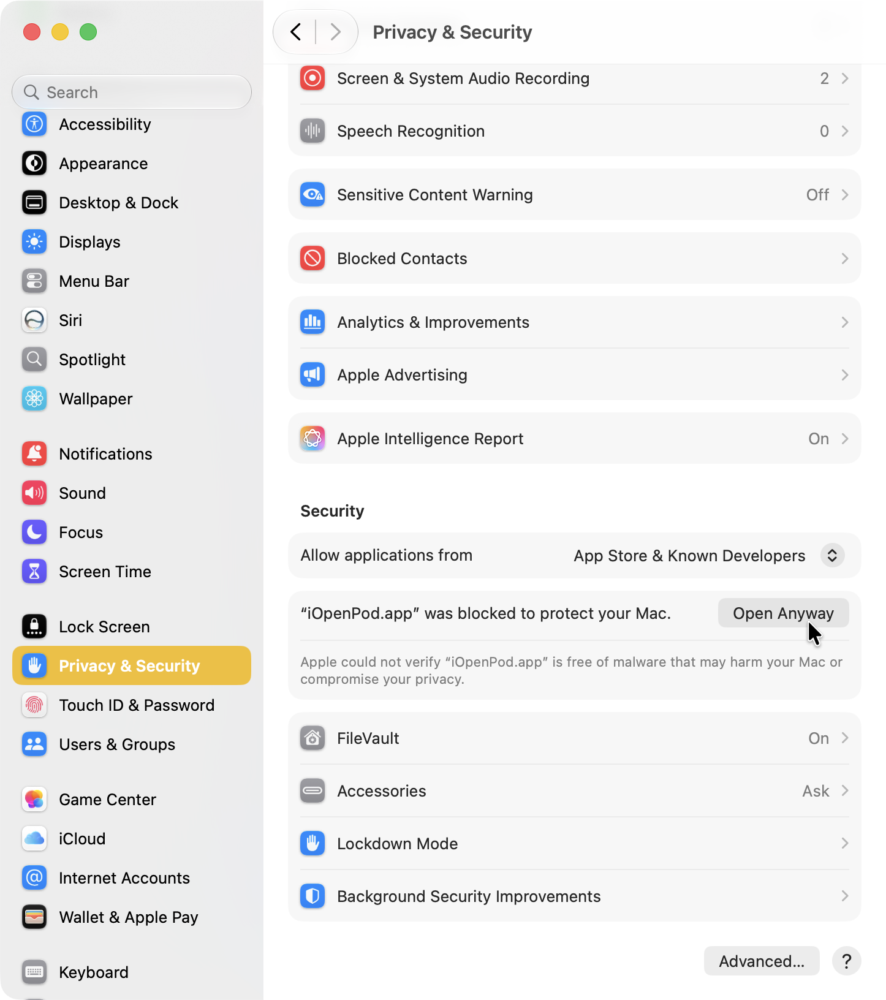

Use uv
Best if you can copy terminal commands. uv keeps iOpenPod isolated and can manage Python for you.
uv tool install iopenpod
iopenpodPick the install path that matches your setup. Use the fixes below only when something goes wrong.
Most users only need one of these three paths.
Best if you can copy terminal commands. uv keeps iOpenPod isolated and can manage Python for you.
uv tool install iopenpod
iopenpodBest if Python 3.11 or newer is already installed. pipx keeps app installs separate.
pipx install iopenpod
iopenpodBest if you want a downloaded app. Native builds may show security prompts because they are not fully signed yet.
Already installed iOpenPod more than one way? Use the cleanup steps before reinstalling.
Download native files from the official GitHub release page, then open the dropdown for your platform.
iOpenPod-Windows.zip.iOpenPod.exe.If SmartScreen appears, check that the file came from the official iOpenPod GitHub release.
Then choose More info, then Run anyway.
iOpenPod-macOS.zip.iOpenPod.app to Applications if you want it installed there.iOpenPod.app.The macOS app is not notarized yet. Gatekeeper may block the first launch.
Only continue if the file came from the official GitHub release.
iOpenPod.app from Finder.
iOpenPod.app from Finder.



iOpenPod-Linux-x86_64.AppImage.chmod a+x ./iOpenPod-Linux-x86_64.AppImage
./iOpenPod-Linux-x86_64.AppImageYou can also mark the file executable in your file manager, then double-click it.
tar -xzf iOpenPod-Linux.tar.gz
cd iOpenPod
./iOpenPodflatpak install --user ./iOpenPod-Linux.flatpak
flatpak run io.github.therealsavi.iOpenPodFlatpak is only available when the release includes iOpenPod-Linux.flatpak.
Use these if you prefer an install that updates from PyPI.
If uv is not installed, follow the official uv install guide. Then reopen your terminal.
Official uv installation instructions
uv tool install iopenpod
iopenpoduv tool upgrade iopenpod
uv tool uninstall iopenpodIf pipx is not installed, follow the official pipx guide. Then reopen your terminal.
Official pipx installation instructions
pipx install iopenpod
iopenpodpipx upgrade iopenpod
pipx uninstall iopenpodiOpenPod can open without these, but full sync needs them.
Needed for media checks and audio/video conversion.
ffmpeg -version
ffprobe -versionNeeded for acoustic fingerprints during matching.
fpcalc -version| Platform | FFmpeg | Chromaprint / fpcalc |
|---|---|---|
| Windows | Use the FFmpeg download page, WinGet, Scoop, or Chocolatey. | Download chromaprint-fpcalc from AcoustID Chromaprint. |
| macOS | brew install ffmpeg |
brew install chromaprint |
| Ubuntu / Debian | sudo apt install ffmpeg |
sudo apt install libchromaprint-tools |
| Fedora / RPM | sudo dnf install ffmpeg |
sudo dnf install chromaprint-tools |
| Arch Linux | sudo pacman -S ffmpeg |
sudo pacman -S chromaprint |
Install these if Linux reports an xcb error or crashes when pressing Ctrl, Alt, or Shift.
sudo apt install libxcb-cursor0 libxcb-icccm4 libxcb-image0 libxcb-keysyms1 libxcb-render-util0 libxcb-xkb1 libxkbcommon0 libxkbcommon-x11-0sudo dnf install libxcb xcb-util-cursor xcb-util-wm xcb-util-image xcb-util-keysyms xcb-util-renderutil libxkbcommon libxkbcommon-x11sudo pacman -S libxcb xcb-util-cursor xcb-util-wm xcb-util-image xcb-util-keysyms xcb-util-renderutil libxkbcommon libxkbcommon-x11If names differ, search your distro for xcb-xkb, xkbcommon, and xkbcommon-x11.
Open the item that matches the problem you see.
iopenpod is not recognizedYour terminal cannot find the command yet.
# uv installs
uv tool update-shell
# pipx installs
pipx ensurepathClose and reopen the terminal. On Windows, sign out and back in if PATH still has not updated.
pipx install iopenpod says Python is too oldiOpenPod requires Python 3.11 or newer.
pipx install --python python3.11 iopenpodOn Windows, list installed Python versions with:
py -0puv tool install iopenpod cannot download PythonManaged computers may block downloads, proxies, or TLS inspection.
Try another network, install Python 3.11 or newer yourself, or use a native build.
Unsigned open-source apps can trigger SmartScreen.
Only continue if the file came from the official iOpenPod GitHub release.
Choose More info, then Run anyway.
Open System Settings, then go to Privacy & Security.
Choose Open Anyway next to the iOpenPod message.
If Open Anyway does not appear, Control-click iOpenPod.app, choose Open, then confirm.
A Qt desktop library is missing. On Debian or Ubuntu, start with:
sudo apt install libxcb-cursor0 libxcb-icccm4 libxcb-image0 libxcb-keysyms1 libxcb-render-util0 libxcb-xkb1 libxkbcommon0 libxkbcommon-x11-0On a Wayland-only desktop, you can also try:
QT_QPA_PLATFORM=wayland iopenpodThis points to Qt's XKeyboard libraries.
Install the Linux Qt libraries above, especially libxcb-xkb1, libxkbcommon0, and libxkbcommon-x11-0.
If you use a native Linux build, download a newer iOpenPod release after those libraries were bundled.
# Ubuntu / Debian
sudo apt install libfuse2
# Ubuntu 24.04 and newer may use this name
sudo apt install libfuse2t64
# Arch Linux
sudo pacman -S fuse2If FUSE still fails, use the tarball, Flatpak bundle, or uv install.
Do not sync until a small write test works.
Find your iPod path. It often looks like /run/media/YOURNAME/IPOD or /media/YOURNAME/IPOD.
findmnt -T "/path/to/iPod"
lsblk -fIn findmnt, ro means read-only. rw means read-write.
touch "/path/to/iPod/.iopenpod-write-test"
rm "/path/to/iPod/.iopenpod-write-test"If both commands work, iOpenPod should be able to write.
sudo mount -o remount,rw "/path/to/iPod"Run the write test again after remounting.
Replace /dev/sdXN with the iPod partition. Using the wrong disk can damage data.
Do not run fsck while the iPod is mounted.
sudo umount "/path/to/iPod"
sudo fsck.vfat -a /dev/sdXNReconnect the iPod, then run the write test again.
If lsblk -f shows hfsplus, Linux write support is limited.
Use macOS, or back up and restore the iPod as Windows/FAT32 before using it mainly on Linux.
Unmount, unplug, and reconnect from your desktop file manager.
Advanced manual mount:
sudo umount "/path/to/iPod"
sudo mkdir -p /mnt/ipod
sudo mount -o rw,uid=$(id -u),gid=$(id -g),umask=022 /dev/sdXN /mnt/ipodInstall the missing helper tool, restart iOpenPod, then check:
ffmpeg -version
ffprobe -version
fpcalc -versionPick one install method and remove the others.
uv tool uninstall iopenpod
pipx uninstall iopenpod
python -m pip uninstall iopenpodThen reinstall with one method, preferably uv or pipx.
If you encounter a bug, please submit a report!
iopenpod.log. In iOpenPod, open Settings > Storage, then click Open next to Log Location.